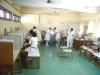
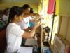
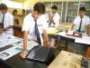
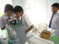
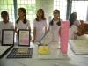
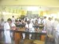

The school provides well-equipped science laboratories where pupils of classes IX to XII are required to do practical experiments. There are distinct laboratories for Physics, Chemistry, Biology, Mathematics and Computer Science. In these laboratories, pupils of the middle classes are also permitted to do practical experiments under the guidance of their teachers. Pupils learn to handle scientific apparatus and chemicals with extreme care and strictly follow the instructions given to them by the teachers. Strict discipline is maintained in the laboratory.
ASTER Room is well equipped with latest computer technology and provides computer aided interactive learning to the pupils. Students and teachers make full use of these facilities which promotes learning by doing.


